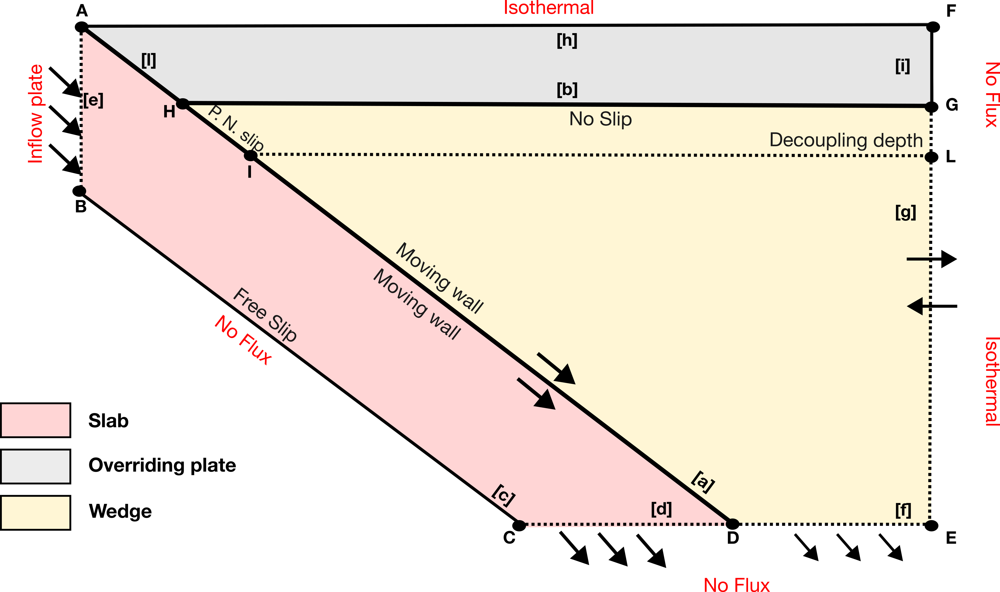

Computational Domain and Boundary Conditions¶
Questions:
How the geometry is generated?
How many sub-domains are generated?
What are the parameters to modify?
What are the boundary conditions? -What are the parameters that controls the boundary conditions?


The computational domain is generated using gmsh and consists of an unstructured triangular mesh [GR09].
In fig:f1_simplified_initial_setup, we sketch a simplified initial computational domain.
This sketch highlights the features that are common to all numerical realisations.
The main portions of the numerical domain are shown using different colours, the points defining the physical boundaries are labelled with capital letters (A–L), and the boundaries are denoted by bracketed lowercase letters ([a–i]).
Domain geometry¶
The main computational domain can be approximated by a trapezoid defined by A, B, C, D, E, and F.
The computational domain extends from the surface (0) km to a maximum depth that is decided by the user (zmax).
The horizontal extent of the numerical domain (i.e., the coordinate x of F and E) depends on the slab geometry.
Point
Arepresents the origin with coordinates (0, 0) km.Point
Brepresents the base of the subducting plate at (0,zslab)\ km, wherezslabis the thickness of the subducting plate.Points
CandDhave coordinates
(x_b,zmax) km and (x_t,zmax) km,
where (x_b)\ and (x_t) depend on the chosen slab geometry.Points
EandFare the rightmost points with coordinates
(x_t + 60,zmax) km and (x_t + 60, 0)\ km, respectively.
Overview¶
The initial setup is divided into three subdomains:
Slab (S)
Wedge (W)
Overriding plate (OP)
These are coloured red, yellow, and grey, respectively.
The subdivision is generated by two internal boundaries:
the top surface of the slab
the overriding-plate boundary
corresponding to lines [a] and [b] in fig:f1_simplified_initial_setup.
The top surface of the slab ([a]) represents the kinematic boundary condition that drives the velocity field of the entire numerical domain.
Velocity is imposed parallel to the slab surface, with magnitude equal to the prescribed convergence velocity.
The base of the overriding plate is treated as a no-slip boundary.
Slab subdomain¶
In fig:f1_simplified_initial_setup, S is shown in red and is defined by points A, B, C, and D. It is bounded by four boundaries: [a], [c], [d], and [e].
On [a], we prescribe an internal moving-wall boundary condition. Boundary [c] is the base of the plate, where a free-slip boundary condition is applied using the Nitsche method [SW20, SWvK24]. Boundaries [d] and [e] are open boundaries, whose inflow or outflow velocities depend on the convergence velocity applied on [a].
The viscosity within S is constant and equal to \(\eta_{\mathrm{slab}}\), regardless of the number of material phases.
The slab may contain different material phases (lithospheric mantle and oceanic crust), each with distinct heat capacity, density, and conductivity.
If the flag model_full is active, whilst the geometry of the slab is saved, the subduction domain will have also the mantle below the subducting plate. This flag has been added to give the possibility to track also the mantle temperature below the slab.
Wedge subdomain¶
The W subdomain is defined by points H, D, E, and F (see fig:f1_simplified_initial_setup). It is bounded by a portion of [a] (from H to D) and by [f], [g], and [b]. Boundaries [f] and [g] are open (do-nothing) boundaries:
[f]is mostly outflow, although inflow may occur depending on position.[g]can exhibit both inflow and outflow depending on wedge rheology.
On [b], a no-slip boundary condition is imposed. Only part of [a] controls the wedge kinematics. As in the slab, a moving-wall boundary condition is prescribed, but a shallow segment simulates partial decoupling between wedge and slab (similar to [vKW23]).
Overriding plate subdomain¶
The overriding plate domain is defined by points [A], [H], [G], [F]. This domain is not used in the computation, it is a geometrical entity that is considered only in the Global domain for solving the lithostatic pressure differential equation and the energy equation.
It may feature one or more phases as a function of the user needs.
Global domain¶
At each iteration and/or time step, the velocity and dynamic pressure field computed in S and W are interpolated back onto the global domain mesh. The velocity is used for solving the energy conservation equation. We briefly describe the boundary conditions prescribed at the external boundaries of the global domain.
Module create mesh¶
Mesh Generation¶
The mesh-generation submodule requires a set of geometric inputs, which are used to populate the Geom_input dataclass.
Geometry:
x: [0.0, 660.0] # Coordinate of X
y: [-600.0, 0.0] # Coordinate of Y
van_keken: False # Activate the geometry of VanKeken benchmark
sub_constant_flag : False # Tells the code to have aslab with a constant bending angle
slab_tk: 130.0 # Slab Thickness
cr: 30.0 # Overriding Crust {if lc==0.0 -> onlyoverriding upper crust}
ocr: 7.0 # Oceanic crust of the subducting plate
lc: 0.3 # lower to upper continental crust ratio
resolution_normal: 3.0 # resolution far from thesingularity point
resolution_refine: 1.5 # resolution around the slabsurface and singularity point
ns_depth: 50.0 # depth of the no-slip condition
lab_d: 100.0 # depth of lithosphere-astenosphereboundary (necessary to compute the continentalgeotherm)
decoupling: 80.0 # depth of decoupling
transition: 10.0 # transition zone thickness(between fully coupled and uncoupled wedge flowregime)
wz_tk: 0.5 # thickness of the virtual shear zone forcomputing the shear heating
sub_lb: 300.0 # total cumulative length in which thebending angle is evolving (necessary for theCustomRibe)
sub_dl: 10.0 # length of segment to compute the slabsurface
sub_theta0: 5.0 # initial bending angle
sub_theta_max: 45.0 # final bending angle
sub_trench: 0.0 # position of the trench
sub_parabolic_a: 8e-4 # [km^-1] -> curvature of theparabolic slab (necessary for the CustomParabolic)
slab_type: "CustomParabolic" # [CustomParabolicCustomRibe,FromFile]
sub_path: "Not Defined" # Required for the realgeometry of the subducting plate
model_full: "False" # Flag to have the entirity of the model.
StonedFEniCSx creates the mesh starting from the subduction geometry (see below, and reference to the geometry input.yml snipet) and the depth of the overriding plate. Then, after defining the main subdomains, it will generate the subregions and populate the domain with rocks-ID.
In Fig. fig:f1_simplified_initial_setup the computational domain is defined by A, B, C and F. A is the trench (sub_trench is the x-coordinate of the point in the geometry section of the input file). B is the intersection of the bottom of the subducting plate with the vertical axis located at sub_trench. C is the intersection between the bottom of the slab and the maximum depth. E is defined using D (the intersection of the top surface of the slab and the maximum depth), by adding \(60\) km to the coordinate-x. F is defined using the coordinate-x of E and the coordinate-y of A.
Geometry of the subducting plate¶
The subduction geometry is constructed with a combination of several parameters. First the user should choose whether the subduction feautures a constant angle or the geometry is the benchmark geometry:
sub_constant_flag: controls the constant bending angle optionvan_keken: controls the geometry using default value for reproducing the benchmarks of [vKCK+08]. In case the user wants to use the benchmarks, they need to activatevan_kekenandsub_constant_flag.
Then the user can choose the type of subduction:
slab_type:CustomParabolic: uses the parabula equation for defining the surface of the subducting slab.sub_parabolic_a: curvature of the parabula used to describe the geometry [SI km^-1]
CustomRibe: uses the bending equation of Ribe [Rib10]sub_lb: a critical along the surface distance in which the bending angle is evolving till the maximum angle (
theta_max)sub_theta_0minimal angle. The angle at the trench, to avoid degenerate meshes.
FromFile: uses a pz/txt file where the top surface of a real slab is defined.
Then, the user needs to define the length step used for defining the geometry of the slab:
sub_dl
The geometry of the subduction is computed using the coordinate of the trench, sub_dl and the bending angle.
The geometry of the slab require also the thickness of the slab slab_tk. However, as a function of the bending geometry, the user defined thickness can be overwritten for avoiding geometrical problems (i.e., when the curvature as a function of the length of the slab is changing too rapidly).
The user can introduce an additional region of the plate: the oceanic crust. The oceanic crust thickness is defined using ocr parameters in the geometry section of the input.yml file.
Important
The subduction plate phases are:
subducting_plate_mantleoceanic_crustsee Rock phases and IDs
The overriding plate is defined using the following parameters:
ns_{depth}, the no-slip boundary depth [meters] always positive and internally converted into negative coordinate.cr, the overriding crust thickness [meters] always positive.lc, fraction of lower crust [n.d.] between0,0.5
The \(ns_depth\) define the depth at which the no-slip boundary condition is defined. The no-slip boundary condition is a horizontal line that ranges from right boundary (defined by the points E-F). H and G are the points in which the no-slip boundary condition intersect the right top-surface of the slab and the right boundary respectively. The small area defined by A,F,G and H can have a different rock-phase. If no crust is defined, the overriding plate is automatically considered lithospheric mantle phase. If the crustal unit is defined without any lower crust (\(lc = 0.0\)), the overriding plate will be filled from the depth \(cr\) with overriding upper crust material (this unit can be costumised to have more oceanic or continental-like material property). In case \(lc\) is different from zero, then, the layer of the overriding plate spanning from \(cr\) and \(cr*lc\) is composed of overriding lower crust material, while from \(cr*lc\) to the surface is composed of overriding upper crust material.
The wedge is automatically defined after the definition of the Overriding plate. It is composed of only one rock-phase (mantle wedge). The mantle wedge phase can have non-linear rheologies and while the material properties are the same of the subducting mantle phase.
Boundary Conditions¶
Kinematic boundary condition¶
kinematic_boundary_condition:
v_s : [5.0,0.0]
constant : 1
interval_val : [5.0,1.0]
interval_time : [20,40]
The kinematic boundary condition is applied along the slab surface. The component of the velocity field vector along the top surface of the slab are computed in a such way that the velocity is always tangential to the slab surface.
v_sis the velocity vectorconstantis the flag that indicate if the velocity change over timeinterval_timeis the time in which the velocity vector magnitude linearly changes.
The boundary is applied along the entire subduction surface within the subducting plate domain; while, in the wedge domain it is applied from the point [H] and [D]. Moreover, there is a scaling function that progressively increase the velocity from 0 to |v_s| between the point [H] and [I]
This function is computed using the tangent hyperbolic transition described in [HM25].
This decoupling zone requires two information:
decoupling: the decoupling depth ([‘I’])transition: the depth interval in which the hyperbolic tangent increase the velocity.
The other kinematic boundary condition is the no-slip. This boundary condition has been described above, and it is introduced during the generation of the numerical domain.
Thermal boundary condition¶
thermal_boundary_condition:
temp_max: 1300.0
temp_top: 0.0
constant: 1
interval_val : [50.0,30]
interval_time: [20,40]
nz: 108
end_time: 180.0
dt: 0.005
slab_age: 50.0
self_consistent_flag: 1
right_boundary : 'Continental' # Oceanic
right_age: 50.0
recalculate : 1 # Option to compute on the fly theboundary -> useful if user wants to change thermalproperties.
The thermal boundary conditions are the top surface (isothermal, whose value is temp_top), and the one specificied in the right lithospheric boundary condition and the left inlet boundary condition where the subducting plate is entering the numerical domain.
left boundary: the left boundary condition is computed self-consistently using the thermal property and geometrical information of the subducting plate. It is always a plate cooling model of an oceanic plate. The temperature field is computed using a finite difference thermal diffusion code that is run at the configuration stage of the simulation.-
end_time: simply tells the code when to stop the thermal diffusion numerical code. -temp_max: describe the potential temperature of the mantle, which is applied as Dirichlet boundary condition at the bottom of the plate.slab_age: is the age of the slab: the code computed 2D arrays with thermal profile as a function of time, and these parameters select the appropriate profile for the given problem.nzis the number of node for solving the 1D thermal diffusion codedtis the timestep for computing the plate-cooling modelAs for the kinematic_boundary_condition, the user can decide if the age of the plate changes over time. If so, the flag of constant must be set to 0, and an interval of value and time should be specificied.
Right boundary: The right boundary condition can beContinentalorOceanic. In the case of oceanic the code will compute (or use) the same 2D array for the left boundary condition using as ageright_age. This will depend on the material properties of the rocks-ID that compose the overriding plate. In case ofContinentalthe code will first compute an initial linear gradient guess usingtemp_top,temp_maxand a geometrical parameter calledlab_d(the litospheric-astenosphere boundary). After that, the code will run a thermal diffusion solver for an amount of time that is decided always byright_age. This produces a quasi-steady-state and allow to consider the radiogenic heating.
The left boundary condition is active between the points [A] and [B] while the right boundary condition is applied between the points [F] and [L].
The other boundary condition [C-E] and [G-E] are defined as a function of the current velocity field: if the velocity field is pointing outward the numerical domain, the thermal boundary condition are do-nothing. If the velocity is inward the temperature of is equal to temp_max. The only exception is the small segment [G-L] in which the temperature is determined by the right boundary condition.
Shear heating¶
Shear heating is applied along the slab surface from point [A] to point [H]. The shear heating is computed using wz_tk. The procedure is the following: first a shear strain rate is computed using the velocity of the slab and the thickness of the virtual weak zone; then, from the strain rate is computed the total shear stress.
Shear Heating:
shear_heating_disl_phi: 5.0
shear_heating_disl_tau_min: 0.0
shear_heating_disl_law: "Wet_Quartzite_2001_Dislocation_creep"
If in NumericalControls the option selected is SelfConsistent,the strength will be computed using the shear dislocation law (shear_heating_disl_law), the friction angle. It is computed using a Drucker-Prager yield criterion without cohesion. In the case the user chooses the Constant, the strenght of the shear zone is computed using a constant stress (tau_min).
After the strength is computed, the shear heating contribution is computed by multiplying the shear stress with the velocity of the slab and the scaling function that define the decoupling.